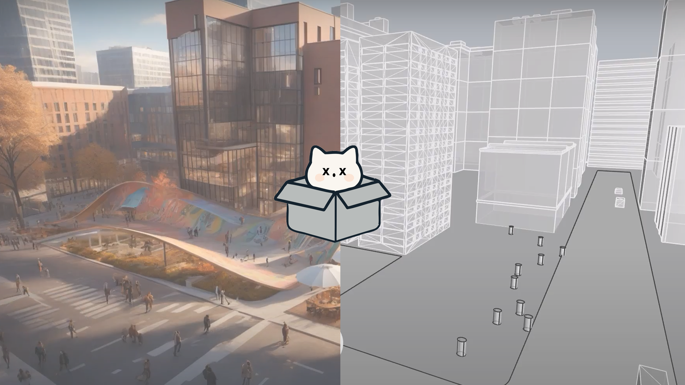
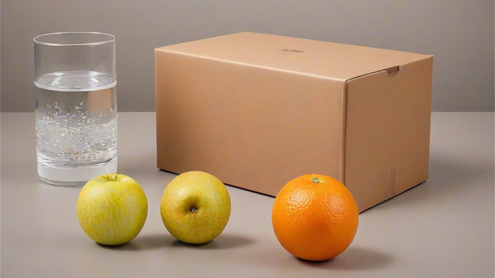
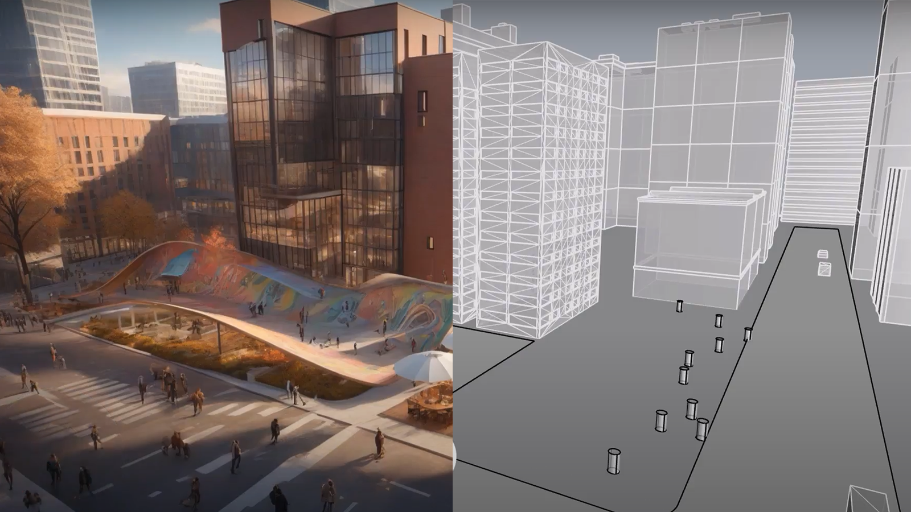
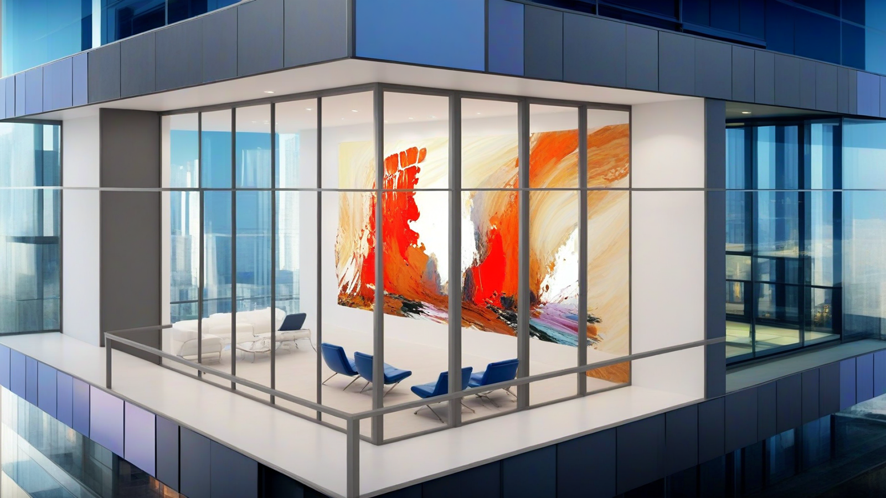
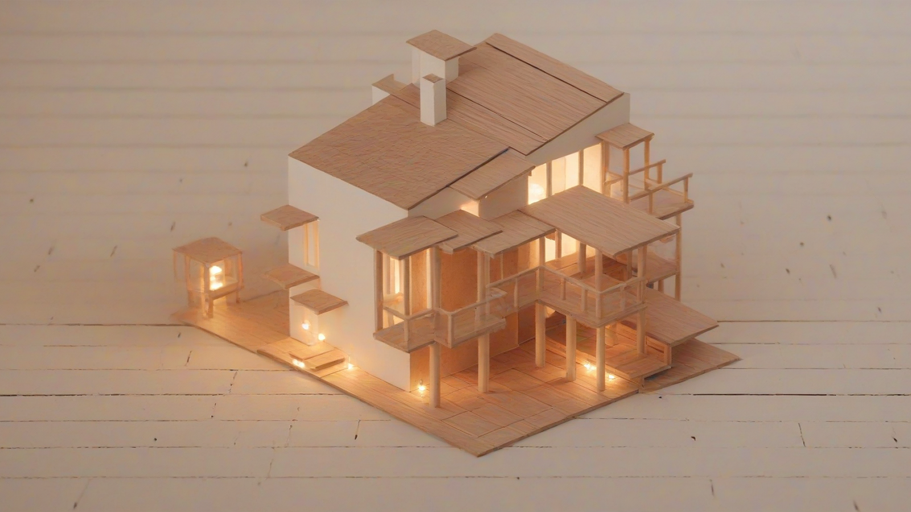

App & Game
Pseudorandom — Shaoyi Wang
Pseudorandom is an AI-based rendering plugin for Rhino software. It applies the comfyUI to perform rendering, supporting both local and cloud-based operations. Users can set image or text prompts based on objects to achieve precise control over rendering, and choose suitable rendering models, parameters, and workflows. The plugin allows users to preview rendering results in the Rhino interface and saves the parameters for each rendering session.



